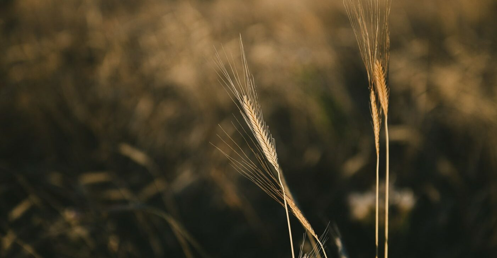
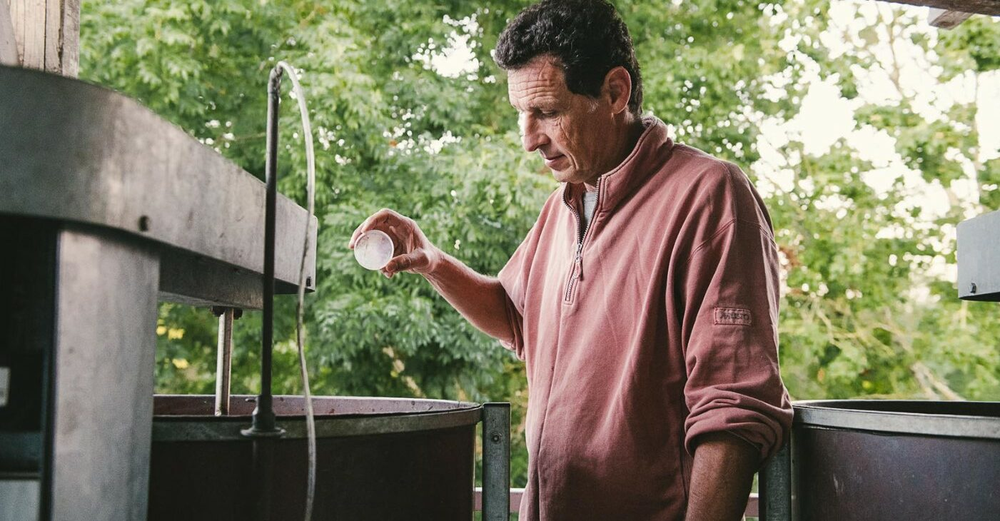
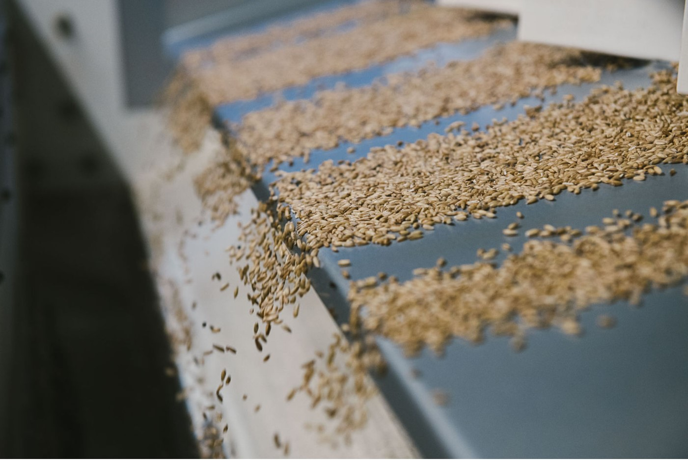

Notre mission finale est de créer des outils Odoo 100 % gratuits, open source et accessibles pour tous. Chaque jour, mis à jour et consolidés par la communauté des bénéficiaires Moulin d'Eau Douce.
Des outils adaptés à tous les modèles d'entreprises agro-alimentaires et à tous les processus métiers, pour que la technologie ne soit plus un privilège mais un bien commun.
MILLØ est le premier pas de cette immense marche collective : notre premier outil, développé pour les opérateurs de la première transformation. D'autres suivront, car le Moulin est en marche.
Faites partie de l'aventure !Parce que la transition écologique et sociale de l'agroalimentaire exige des outils à la hauteur de ses enjeux, nous accompagnons les acteurs engagés vers des modèles plus justes, sains et résilients.


Nous sommes convaincus que la transformation de notre système alimentaire ne se joue pas uniquement dans les champs. Elle dépend aussi de la robustesse des chaînes de production, de logistique et de distribution.
C’est ici que nous intervenons : en mettant toute la puissance et la flexibilité de l'ERP Odoo au service de l'agroécologie, de l'agriculture régénérative et des circuits de proximité.
Nous dotons les filières responsables des mêmes armes technologiques que l'industrie classique.
« Nous ne sommes pas de simples intégrateurs logiciels. Nous sommes des artisans du numérique, engagés pour offrir à l'agriculture de demain des outils libres, sobres et performants. »